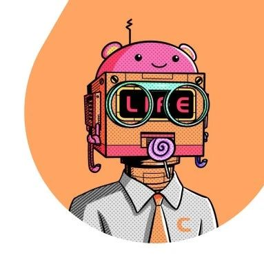

投稿 | 全球数字游民：白鱼
作者: SeeDAO
分类:
SeeDAO, Web3, DAO, 数字游民, 数字游民分享会
我以前靠做研究给行业写一些稿子，后来创业了，就给自己发一点工资。后面公司解散成立了SeeDAO，就在SeeDAO里面拿积分。

我去年离开大理，现在又回到了大理，游荡了一年，其间在美国洛杉矶待的时间最长，其他的地方都没有待很长时间，所以对于数字游民生活我一直还没有一个很深的体验。作为游民，我没有跟在地发生很强的连接。其实我一直对在地这个话题比较无感，直到前一段时间出了一篇文章，那篇文章把数字游民比喻成类似于一种瘟疫，一些在地的当地的人会觉得游民抬高了物价，所以不是很喜欢数字游民。我开始去反思我原来偏自由主义，想的比较单纯，觉得在地跟我没什么关系。我有钱，我去购买在地的服务，发生交换，我没有侵占它什么东西。但是那篇文章确实引起了我的思考，就比如货币也有强势货币和弱势货币的区分，然后资源的分布和流动，还有你受教育的权利的流动，这些东西都是不一样的，所以我开始觉得需要考虑在地的情况。我自己因为一直在飘嘛，每个地方可能最多待个十几二十天，住方面有Airbnb， Airbnb里面都会有厨房，就可以去买一些菜自己做饭。但其他东西比如你要打车，像在黑山打车就很不方便，在土耳其还好一点，但是用车一直是一个很难的问题，你容易被坑，被宰客，这个在东南亚在不能用 Uber 的地方都比较麻烦。还有就是租房，上次我在黑山就租了一个公寓，结果那个公寓只是挂在网站上面，我付了钱，它其实已经关闭了好久，这个时候你就要开始跟平台去沟通，我觉得这就是一些很直接的问题。更重要的一点，就是在当数字游民的过程中，你一直在游，没有一个定的状态，时间长了其实会有一些困扰。因为事情总是相对的，你有游就应该要有定，有阴就要有阳，对吧？如果一直是在游的话，我有时候也会感觉到一些焦虑。比如说我有很多书，而我的书根本就不知道存在哪。我买了书我也不知道快递寄到哪里。像前段时间我从香港回来，然后又去了黑山，又回来东北，就跟朋友一起在东北旅行，后面又去重庆，他们看到我都是拎着两个超级大的箱子，背着个书包，还可能加上个小的提包。然后他们就问我，你为什么有那么多东西？然后我就说我数字游民，有冬天的衣服，还有夏天的衣服，关键是我还有很多书，还有一些其他的东西。我其实已经是把能扔的都扔了，已经很简朴了，但是有些东西你还是扔不掉了，扔不掉这个时候你在全程游走的时候就很麻烦。可能如果你在城市里面还好，就是你出去就可以叫车，然后就可以去机场，但如果你赶上比如说极端暴雨的天气，那天我在黄山就是下非常大的雨，我要从我住的民宿到景区门口，还好那天民宿的老板就用他的小三轮把我送出去了，否则整个东西都会湿掉。因为东西实在太多，两个大箱子就很难推。这种都是来自于物理上的一些不方便，如果你没有一个定的地方，需要一些适合数字游民的仓储和接受快递的地点。我现在就是存在朋友家。我一个箱子在泰国，一个在洛杉矶，还有……然后另外一方面就是心灵上的，就是我在香港，就是咱们SeeDAO那个年度聚会上也说过我觉得“游”不是根本的目的，只是一个手段，你最后是要找到自己的内心的那个归属，然后你想要做什么事情。“游”只是那个手段，增加你的经验识，你去体验这个世界，体验不同文化下的人，然后跟他们发生连接。我们的出发点一般都是反对你在格子间，在流水线，把你变成一个螺丝钉，然后每天朝九晚五的工作打卡，但它绝对也不是让你变成四处在飘，没有家，一直在路上也不去思考，并不是那种状态。我最近慢慢想通了，这可能是跟人的时间阶段有关系。你永远不可能完全是游，也不可能完全是定。即使你真的是在Web2上班的人，你也会挑一些假期或者年假出来旅游，你不能说在旅游的时候不是在游。数字游民你也不能说他一直在游，他有时候也会在一个地方待好几个月，甚至半年，他也想找一个地方待。所以我觉得游和定是一个度的问题，在不同的人身上比例不同。然后可能早期的阶段你会游得多一些，因为你要体验体验这个世界，你要获得更多的经验，然后面你可能就定的稍微多一些。我是17年进入Web3的， 然后从去年开始才真正意义上成为数字游民，就是去年离开大理到现在再回到大理这段时间。我们跟 Vitalik聊，他说他已经做了 10 年的数字游民，他13年就从加拿大辍学，之后就一直在全球游荡。我现在才游了一年，而我绝大部分的 Web3知识是在我去游之前就已经有了的，当时也已经创立了SeeDAO，那我在游的过程当中对我在 WEB3 做的事情，或者说对我在SeeDAO做的事情有哪些帮助呢？第一是线上社区和线下社区的关系，因为我们最早进来的时候，尤其是现在很多人都是听到元宇宙进来的。元宇宙那个时候一上来就好像是要把线下的肉身的全部都抛掉，然后完全进入那个虚拟空间。后来发现DAO成员的线下见面 in real life 也很重要。那元宇宙的梦想，理想还要不要？这个问题我当时是困惑过的，后来我发现其实就是既要又要，既要线上也要线下，它是有一个自己的逻辑关系的。这个是我来大理之后想明白的，如果没有SeeDAO，那我来到大理肯定是一个人都不认识，我就是一个陌生的游客，我得慢慢去发展当地的关系。但去年我来到大理的时候，我感觉很舒服，很快就在这找到了很多朋友，做了线下的活动，而且很快租到了SeeShore这栋房子。我们先有了 SeeDAO的线上社区，然后这些人又成群地集中在大理，我来了之后就可以迅速地加入本地的网络。我觉得这件事情很重要，就是先有线上的共识，然后再到线下，有点像网友奔现，网友奔现之后你们会加深这个共识，然后你们又四散到天涯，然后又在线上继续在聊天。这样一个循环就是从线上到线下，又到线上，我觉得这种循环非常有意思，这是我当时想通的。大家目前可以用notion预定Seeshore的住宿，SeeDAO大理线下据点，房子2023.07.31 整体到期。Seeshore入住申请👇🏻
https://seedao.notion.site/SeeDAO-2023-Season-1-62d2c2aa83424aecbe9f8da45b14b906 你先要有一个线上的能够一致行动的共同体，然后在线下经常有活动。现在SeeDAO的基本的模型也是这样。线上的东西， Zoom 的会议永远代替不了线下的见面。我会坚持跟每个人都要在线下见一次面。我们每年会有几次大的活动，有一个年度聚会，然后还会在以太坊或者在WEB3 行业有大的会议的时候也会组织一些周边活动，这样的话就可以跟大家见面，这是第一个。第二个对我来说很大的一个感受就是，因为我在海外，所以能体会到美国的文化，我就会去读美国早期建国的历史，然后去中东就了解穆斯林的文化，海湾国家的文化，在泰国了解东南亚，然后再看他们的城市发展。最关键是你可以接触到当地的 Web3的社区，看它是如何发展的。我在旅途中一直在跟人交流，Web3是全球化的，大家都认同这个观点，但是大家的文化背景是不一样的，语言是不一样的，语言背后又蕴含着你的思维的结构的差异，包括环境也不一样。那怎么处理这个问题？你不是要回到很狭隘的民族主义，你已经不是局限在一个现实世界的土地上的一个社区了，而是到了网络社区里面，我们都说我们进入到了一个数字世界，对吧？里面还是会有部落，一个DAO在我看来就是由一个个人组成的数字部落。那这个数字部落的边界是什么呢？现实世界是靠土地，那网络世界的如何划分呢？可能是兴趣爱好，语言文化。语言和文化确实很重要，我们不可以去忽视它。如果我们都是讲英语的社区，这样的话就不会有SeeDAO，因为当时海外的以英语为主语的社区有很多，我们也想过到底做英语还是中文，最后我们决定我们的官方语言一定是要有中文的，然后也有英文，有可能还要以中文为主。比如说我们要讲东方文化，我们讲Seed 的概念是向内求，天人合一，那这些东西一定是要先用中文写的，再翻译过去。后来发现这个东西还是有很多人有需求的，很多在海外的DAO做贡献的华人，可能台湾、香港或者是华裔，他们加入了SeeDAO，他们觉得这里很亲切。后来我发现，韩国人确实也做了一个韩国人自己的DAO，讲韩文的，然后伊斯坦布尔有伊斯坦布尔DAO这个东西确实是存在的。数字城邦的边界就是语言，语言就是数字城邦的边界，这就是我在游走的过程当中感受到的。我觉得在未来很长一段时间，这个可能还是很难消弭的。可能未来大家有了全球化的生活和流动的经验，慢慢的我们的文化会彼此交融成一种文化。但在这之前，我觉得未来很长一段时间语言还是边疆。这两点是我在旅途过程当中对 Web3的一些思考。关于我个人的话，我觉得可能就是要开始思考自己人生的一些事情，比如我以前就是读书嘛，上学嘛，工作可能在北京在上海。后来异国他乡，就长期可能跟家人见不到面。见不到面，那这个时候怎么处理你自己的理想和家人的关系？然后可能一直在游走，家长有时候也不是很理解，那这些事情我觉得是可能要去处理的。用一个很朴素的话说这个矛盾和冲突，中国古人的一句话叫父母在不远游，那父母还在的时候你怎么远游啊？这里面是有一些家庭的关系处理问题，我还在学，还在想怎么调和这个事情。其次就是在做数字游民的过程当的成长，就是你会发现你要找到定居的那个点的过程当中，就意味着你要做很多选择，需要先知道排除项是什么，比如哪个地方我不喜欢，哪些人我不喜欢，然后慢慢的我觉得可能就会留下你自己真正想要的。这就是用那句话来说，见多识广。关键是你自己先要心里有一些问题，带着这些问题去想去游才会比较有意义。我也见过一些朋友一直也在游，但我感觉那不是我想要的状态，好像就是为了打卡发朋友圈，其实我觉得心里有问题还是比较重要。这个问题我其实是想抛出来跟大家一起交流。我刚才回答第一个问题的时候也讲了，就是我以前根本不太在意在地社区，我觉得在地跟我没什么关系，我比较喜欢那种所谓大隐于市的状态。我一个人像个孤魂野鬼一样走在大理的古城里面，大家谁也不认识我，我就到处看，我就喜欢那种状态，比较宅，也没有任何艳遇。这个时候在地跟我其实没什么太大关系。但是看那篇文章的时候，我就想，那种生活是虚假的，如果当地的商品供给是有限的，你进来买了，那就有人买不到了，虽然是自由的市场，但你确实会对价格有影响。而且大家知道全球的劳工本来就是不平等的，发达国家的劳工和非发达国家的劳工薪酬差距很大。虽然你是远程工作，但你可能是美国的跨国公司，那和在地的公司就是不一样的，它们之间就有权力的不平等，这种不平等虽然不是你造成的，但你确实是在享受这种地理套利。我在想如何让在地人收益，比如让他受益于因为你的到来而增加的一些本地就业机会。比如说黑山这一次为什么会欢迎Zuzalu？因为他们就是把 Web3当作一个行业，当作招商引资，或者说一个机会，看能不能带动当地的发展。这是政府层面，或者是一些为旅游业服务的商人的考虑。可是一些普通的本地人，他们是不是喜欢这件事情，他们的利益有没有受损？我觉得这是一个系统性的问题，然后我现在还没有完全去把它捋得很清楚，只是今天主持人问我有什么想聊的，我就抛出来了。如果大家感兴趣，我们可以一起收集资料，做一些研究。我觉得还是那个经典的命题，考虑做数字游民的时候，你不可能只解放你自己，只管你自己的死活，不管别人。在理性上来说这也是做不到的。如果大家都成了数字游民的时候，大量的人涌入大理，那在地就会有问题。那如果在地的社区开始出现一些抗议民粹，然后把你都赶走，那你就像一个耗子一样在全球流浪吗？我觉得这里面肯定是要有一些方案的，是值得考虑的。虽然暂时还没有太多人开始游，也没有太多人开始做remote，但我觉得长期这肯定是一个系统性的问题。我再说一个很搞笑的例子，大家就可以知道这一点为什么会发生。你比如说现在很多朋友在SeeDAO，他感觉到很自由，在这里可以学到一些 Web3 的东西，真的是他感兴趣的东西，他就在这儿贡献，这件事情看起来是很自由的，但这里面背后也有一些系统性的矛盾。比如说有朋友他的老板知道了他在SeeDAO，就问他在SeeDAO到底什么位置，其实潜在词就是说你为什么花大量的时间在SeeDAO，然后在我这儿摸鱼。那如果越来越多的像SeeDAO的这样的DAO出来，那大量的人在公司的时候可能真的就在摸鱼。他在RW，在 SeeDAO这些地方他觉得很开心，然后他又是一个数字游民的状态比较自由的。那这个时候怎么办？像有些硅谷的公司，他们给远程工作的人配那种手环，你要搞这种东西吗？这种东西可能也会出来，我甚至我觉得它必然会出来。那你是道高一尺魔高一丈，继续在这里面博弈吗？我觉得单个人肯定是解决不了这个问题的，我们必须要思考这些问题。这是我想分享的。对于这个问题我没有答案，只是抛了一系列我想的点来讲一讲。内容来源 | Raven
设计排版 | T1NG
审核 | Ines